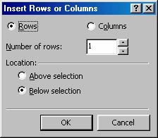
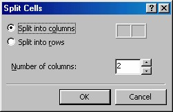
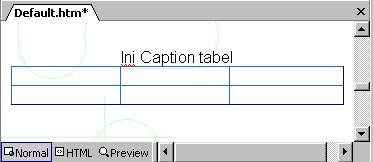

3 Mengatur susunan tabel
Pembahasan berikutnya adalah tentang pengaturan susunan sel.
3.1 Menyisipkan sel
Cara meyisipkan sel langsung pada tabel.
1. Tempatkan kursor ke dalam sebuah sel
2. Aktifkan Table _ Insert Cell. Sebuah sel akan disisipkan di sebelah kanan sel
aktif. Dan akan mendorong sel-sel lainnya ke sebelah kanan.
3.2 Menyisipkan baris dan kolom
Berikut ini cara penyisipan baris dan kolom dengan kotak dialog:
1. Tempatkan kursor di lokasi penambahan baris atau kolom baru.
2. Lalu aktifkan perintah Table è Insert Rows or Columns . Kotak dialog seperti
Gambar 9.15 akan terbuka.

Gambar 9.15 Menyisipkan Sebuah Baris atau Kolom
3. Mulailah dengan memilih apakah Anda akan menyisipkan baris (pilihan Rows)
atau kolom (pilihan Colums).
4. Kemudian tentukan jumlah yang Anda inginkan pada Number of rows .
5. Kemudian tentukan apakah Anda ingin menempatkan kolom baru di sebelah kiri
kolom terpilih (aktifkan pilihan Left of Selection) atau di sebelah kanan kolom
terpilih (Right of Selection).
6. Untuk baris baru tersedia du pilihan penempatan juga , yaitu di atas baris terpilih
(Above Selection) atau di bawah baris terpilih (Below Selection).
7. Klik OK. Kolom atau baris baru akan disisipkan di lokasi yang Anda inginkan.
3.3 Membagi Sel
Cara lain untuk menambah sel yaitu dengan membagi sel-sel yang sudah ada.
1. Klik sel yang ingin Anda bagi.
2. Aktifkan perintah Tabel _ Split Cells.
3. Kemudian pada kotak dia log yang muncul (lihat Gambar 9.16), tentukan apakah
Anda ingin membagi sel-sel ke dalam kolom (Split into columns ) atau baris
(Split into rows ).

3.4 Memasang Caption (judul)
Anda dapat memasang caption, yaitu teks sederhana di bagian atas atau bawah tabel.
Caption bukanlah teks biasa yang di tempatkan di atas atau di bawah suatu tabel,
melainkan di buat khusus menggunakan tag HTML, <caption>.
Cara teks tersebut ditampilkan bergantung pada browser; pada Internet Explorer teks
dicetak tebal dan ditampilkan dengan warna latar yang sama dengan tabelnya.
Sedangkan pada Netscape Navigator teks itu tidak dicetak tebal dan tidak
ditampilkan dengan warna latar tabel, ditempatkan lebih atas.
Anda dapat menggunakan tools format teks seperti color, bold, italic, size dan lainlain
untuk memodifikasi caption.
Cara membuat Caption adalah:
1. Klik saja pada sembarang tempat pada tabel.
2. Lalu aktifkan Table è Caption. FrontPage akan membuat sebuah ruang kecil
pada bagian atas tabel untuk caption tersebut.
3. Ketikkan caption yang diinginkan.
4. Lakukan pemformatan yang diperlukan.

Gambar 9.17 Captin tabel
Untuk memindahkan caption, klik caption itu dan pilih Table è Caption. Sebuah
kotak dialog muncul, berguna untuk menentukan pilihan Top of Table atau Bottom
of Table.
Untuk menghilangkan caption:
1. Hapuslah semua teksnya
2. Lalu dengan kursor pada ruang caption, tekan Backspace.
Untuk menghapus isi sebuah sel, klik pada sel itu lalu tekan Backspace. Sedangkan
untuk menghapus seluruh tabel, pilih perintah Table _ Select Table lalu tekan
Delete.
Copyright © Herlan Lesmana
Created with the Freeware Edition of HelpNDoc: Easily create Web Help sites